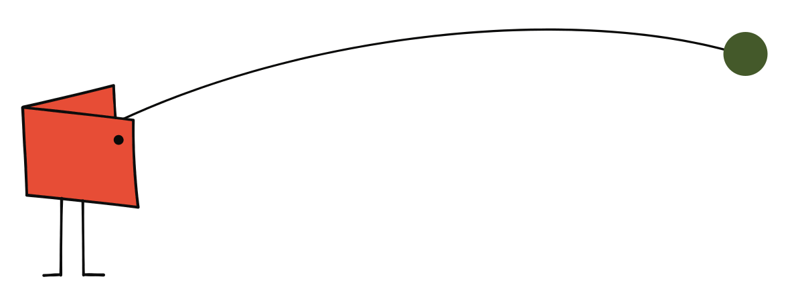
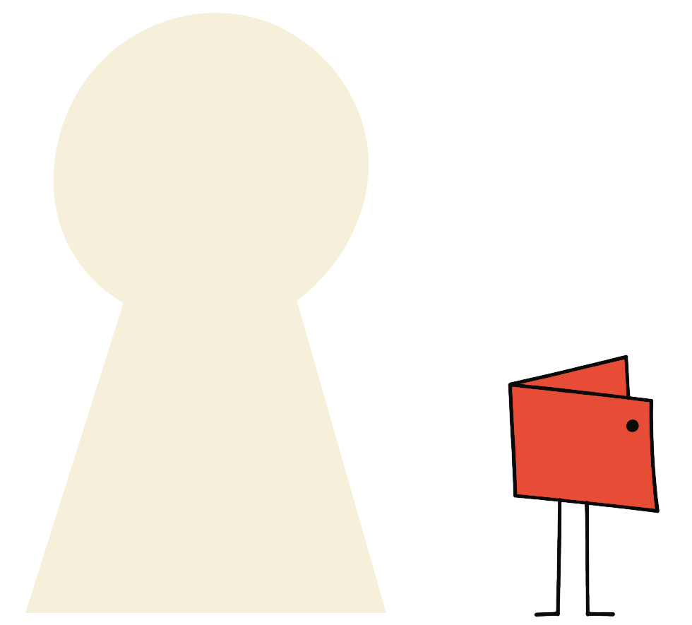

How it works
One request goes out. One checked signature comes back.

-
Your agent prepares the transaction
It builds and checks the transaction with the Stellar CLI.
-
1Password signs it
walleterm takes the transaction and asks 1Password to sign it. Approve on your Mac if asked.
-
walleterm checks the signature
It checks the signature, then returns the signed transaction to your agent.
Made for agents to read
One sign command handles transactions, contract authorizations, and messages. Each command returns one JSON object. A failure returns a stable error code.
Skills ship for Claude Code, Codex, OpenCode, and Grok. It also works as a Stellar CLI plugin: stellar walleterm.
$ walleterm sign < payment.json
{
"ok": true,
"public_key": "GDX4…Q7MA",
"digest": "5f1c9e…a04b",
"signature": "9ad07e…c211",
"signed_transaction_xdr": "…",
"verified": true
}
Boundaries
What it will and will not do.

- Keys stay in 1Password
- You create the key inside 1Password. walleterm never exports, prints, logs, or caches it.
- Every signature is checked
- walleterm checks each signature against your public key before it returns it.
- Approval, your way
- 1Password approves key use with the settings you choose. Your agent reviews what it signs, and you can add more checks before any signature.
- Websites never see your key
- A website can ask for a signature. The key stays in 1Password.
- Uses the 1Password you have
- walleterm uses the SSH agent in the 1Password desktop app on your Mac. Your vaults and settings do not change.
Websites
A website can ask, too.
Run walleterm tunnel. A website connects with a QR code or an eight-digit code. Then it can ask the key you pick to sign transactions and messages.
4821 0937
- Works once
- Expires in five minutes

Install
Start on your Mac.
Turn on the SSH agent in the 1Password desktop app. Then install with Homebrew, or with the script if you do not use Homebrew.
brew tap stellar-experimental/walleterm https://github.com/stellar-experimental/walleterm brew install --cask stellar-experimental/walleterm/walleterm npx skills add stellar-experimental/walleterm -g -s walleterm -s walleterm-site-bridge walleterm list --human
Update with brew upgrade --cask walleterm. The cask also installs cloudflared.
curl -fsSL https://walleterm.com/install.sh | sh npx skills add stellar-experimental/walleterm -g -s walleterm -s walleterm-site-bridge walleterm list --human
Run the script again to update. It installs into ~/.local/bin. Read the script.